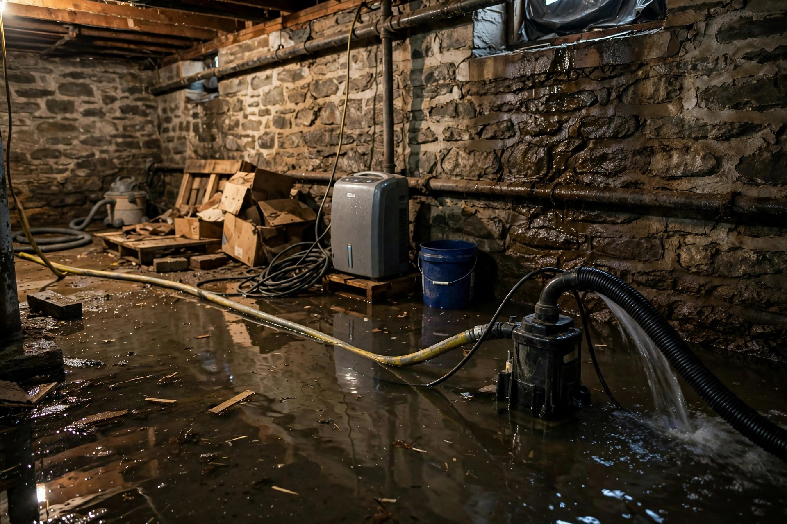

Flooded Basement Cleanup
Standing water out, structure dried, belongings triaged. A complete cleanup for Caldwell's below-grade spaces.

What the cleanup includes
| Phase | What happens |
|---|---|
| Pump-out | Standing water removed with submersible pumps and extractors. |
| Debris removal | Ruined carpet, pad, and unsalvageable materials hauled out. |
| Cleaning | Hard surfaces washed; contaminated areas disinfected per IICRC guidance. |
| Drying | Air movers plus dehumidification, monitored daily with meters. |
After a wet March week, a homeowner finds two inches of water across a finished basement — the sump discharge froze and backed up. Pump-out takes an afternoon; drying and carpet removal take the rest of the week.
Basement underwater?
Call now — pump-out starts the same visit, and drying begins right behind it.
Open 24 hours · Serving Caldwell and Canyon County
Questions, answered plainly
Can a flooded basement be saved?
Usually yes. Prompt pump-out and thorough drying save most structures. The key variables are water type, how long it sat, and whether the foundation itself is sound.
How do you dry under the flooring?
We pull baseboards, drill discreet weep holes where needed, and direct airflow into wall cavities. Moisture meters confirm when cavities reach safe levels.
What about my stored belongings?
We help triage: what dries, what cleans, and what should go. Non-porous items usually survive; soaked cardboard and upholstery often do not.
Do I need a sump pump after this?
If groundwater caused the flood, a sump system is worth discussing with a waterproofing contractor. We handle the cleanup and drying; they handle permanent water management.
How long does basement drying take?
Typically three to five days of monitored drying for a standard basement, longer for saturated masonry. We do not pull equipment until meters say it is dry.
During drying, we track
- Daily moisture readings in walls and slab
- Humidity levels until the space holds steady
- Airflow adjusted as materials release moisture
- Clear sign-off only when meters confirm dry
Sources: EPA — Mold, Moisture & Your Home · CDC — Mold
What we salvage vs. what goes
Usually salvageable
Solid wood furniture, metal items, glassware, and hard plastics clean up well after disinfection. Photographs and documents can sometimes be freeze-dried by specialists.
Usually discarded
Soaked carpet pad, upholstered furniture, mattresses, and cardboard boxes rarely recover. Porous materials hold contaminants even after cleaning.
Case by case
Area rugs, clothing, and books depend on water type and soak time. We give honest guidance rather than blanket rules.
Document first
Photograph everything before it is moved or discarded. Insurers need the visual record, and it costs nothing to capture.
How Caldwell basements flood
Spring water table rise
Snowmelt and rain lift the water table each spring. Older foundations without drainage tile seep along the floor-wall joint.
Creek-adjacent properties
Homes near Indian Creek sit lower than surrounding streets. Heavy runoff events push water in faster than sump pumps can move it.
Failed sump or drain
A dead pump, a tripped breaker, or a clogged discharge line turns a manageable seep into inches of standing water overnight.
Preventing the next flood
Cleanup solves today. These steps reduce the odds of a repeat.
Sump pump with backup
A primary pump plus battery backup keeps working through power outages — when flooding is most likely.
Exterior grading
Soil should slope away from the foundation for at least six feet. Regrading is unglamorous and highly effective.
Downspout extensions
Roof water dumped at the foundation is the most common preventable cause we see. Extensions cost little and help enormously.
Floor drain maintenance
Keep basement floor drains clear of debris and test them yearly. A clogged drain turns a minor seep into standing water, and most homeowners never check until it is too late.